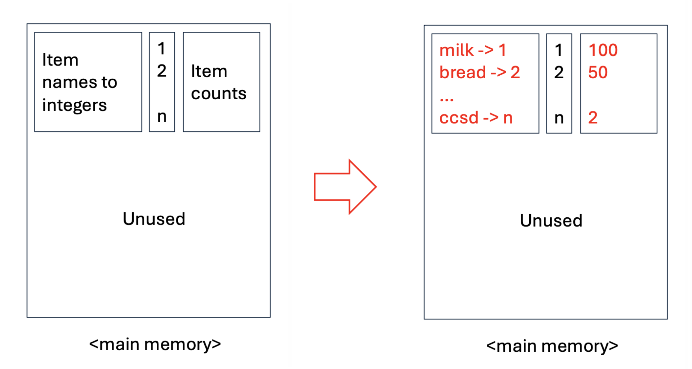
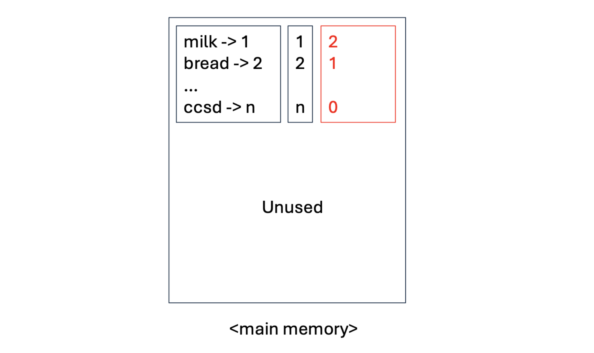
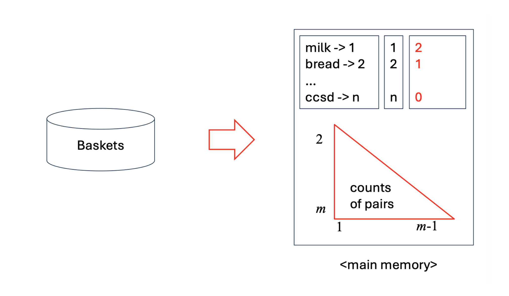
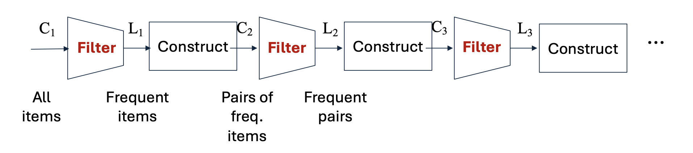

1. Introduction: O(n²) 메모리 장벽을 넘어서
이전 포스트에서는 모든 항목의 조합을 한 번에 탐색하려는 Naïve 알고리즘이 메인 메모리 병목(Main-Memory Bottleneck)으로 인해 실패하는 과정을 확인했습니다. 항목이 수십만 개 이상인 현실의 대규모 장바구니 데이터를 처리하기 위해서는 디스크 접근(Pass)을 최소화하면서도, 메모리 사용량을 지수적으로 줄일 수 있는 영리한 알고리즘이 필요합니다.
이러한 배경에서 등장한 것이 바로 데이터 마이닝 역사상 가장 상징적인 알고리즘 중 하나인 A-Priori Algorithm(선험적 알고리즘)입니다. 이 알고리즘은 두 번의 데이터 스캔(Two-Pass Approach)만으로 메모리 사용량을 획기적으로 통제하며, 그 기저에는 수학적 직관인 단조성(Monotonicity)이 자리 잡고 있습니다.
2. Key Idea: Monotonicity (단조성)
- A-Priori 알고리즘의 심장부는 ’단조성(Monotonicity)’이라는 단순명료한 확률적/집합적 성질입니다.
단조성(Monotonicity) 원리 만약 특정 항목 집합 \(I\)가 최소 지지도 \(s\) 이상 등장하는 빈발 항목 집합(Frequent Itemset)이라면, \(I\)의 모든 부분집합(Subset) \(J \subseteq I\) 역시 반드시 빈발 항목 집합이다.
이는 직관적으로 당연합니다. 장바구니 데이터에 우유, 맥주, 기저귀를 동시에 산 사람(집합 \(I\))이 100명이라면, 최소한 우유와 맥주를 산 사람(집합 \(J\))은 무조건 100명 이상일 수밖에 없기 때문입니다.
이 명제의 대우(Contrapositive)를 취하면, 조합 탐색의 가지치기(Pruning)를 위한 핵심 법칙이 도출됩니다.
“어떤 단일 항목 \(i\)가 지지도 \(s\)를 넘지 못한다면(빈발하지 않다면), 항목 \(i\)를 포함하는 그 어떠한 쌍(Pair)이나 부분집합도 절대 빈발할 수 없다.”
- 이 대우 명제를 이용하면, 우리는 처음부터 빈발하지 않은 단일 아이템들을 메모리상에서 과감히 제거해버릴 수 있습니다. 이것이 A-Priori의 핵심 전략입니다.
3. A-Priori Algorithm: 2-Pass Approach
- A-Priori는 거대한 디스크 데이터를 메모리에 효율적으로 올리기 위해 데이터를 두 번 읽는(Pass 1, Pass 2) 방식으로 동작합니다. 가장 찾기 힘든 빈발 쌍(Frequent Pairs)을 찾는 과정을 단계별로 살펴보겠습니다.
3.1 Pass 1: 단일 항목의 빈도수 측정
- 첫 번째 스캔의 목표는 개별 항목(1-Itemset)들의 등장 횟수를 세고, 이들 중 지지도 \(s\)를 넘는 빈발 항목(Frequent items)을 식별하는 것입니다.
- 테이블 1: 데이터베이스에 존재하는 모든 문자열 항목(Item names)을 \(1\)부터 \(n\)까지의 정수(Integers)로 번역하는 매핑 테이블을 생성합니다.
- 테이블 2: 각 항목 \(1 \dots n\)의 빈도를 카운팅할 1차원 정수 배열(Array of counts)을 0으로 초기화하고, 디스크에서 Baskets를 읽어 들이며 카운트를 증가시킵니다.
- 이 단계에서 요구되는 메모리 공간은 전체 항목의 개수 \(n\)에만 비례(\(O(n)\))하므로 매우 작고 안전합니다.

3.2 Between Pass 1 & 2: 메모리 최적화 재매핑
Pass 1이 끝난 후, 카운트 배열을 스캔하여 빈도수가 \(s\) 이상인 항목들만 남깁니다. 이렇게 살아남은 빈발 항목들의 개수를 \(m\)이라고 합시다 (\(m \ll n\)).
이제 다음 Pass에서 메모리를 획기적으로 줄이기 위해 인덱스 재배열(Renumbering)을 수행합니다.
- 살아남은 빈발 항목 \(m\)개에 대해서만 \(1\)부터 \(m\)까지 새로운 연속된 정수 인덱스를 부여합니다.
- 크기 \(n\)짜리 배열을 새로 생성하여, \(i\)번째 항목이 빈발 항목이면 새로운 번호(\(1 \dots m\))를 저장하고, 빈발 항목이 아니면 \(0\)을 저장합니다. (이렇게 하면 어떤 항목이 빈발한지 아닌지 \(O(1)\)로 판별 가능해집니다.)

3.3 Pass 2: 빈발 쌍(Pairs) 탐색
- 두 번째 스캔에서는 디스크에서 Baskets를 처음부터 다시 읽습니다. 하지만 이번에는 모든 것을 세지 않습니다.
- 각 장바구니를 읽을 때마다, 포함된 항목들 중 “빈발 항목(재매핑된 번호가 1~m 사이인 것)”들만 추려냅니다.
- 장바구니 내에 살아남은 빈발 항목들 사이에서만 쌍(Pairs)을 생성합니다. 단조성에 의해, 여기에 속하지 않은 항목이 포함된 쌍은 어차피 빈발할 수 없으므로 무시합니다.
- 이 쌍들의 빈도를 저장하기 위해 이전 포스트에서 배운 삼각 행렬(Triangular matrix)이나 트리플(Triples) 자료구조를 메인 메모리에 할당하여 카운팅합니다.
- 이때 소모되는 메모리는 전체 아이템의 제곱(\(O(n^2)\))이 아니라, 빈발 아이템 개수의 제곱(\(O(m^2)\))에 비례하므로 메모리 병목을 완벽히 피할 수 있습니다!

4. K-tuple의 확장: The A-Priori Pipeline
- 쌍(Pairs, 2-tuples)을 넘어 크기 \(k\)의 다중 항목 집합을 찾기 위해서 A-Priori 알고리즘은 Generate-and-Test 파이프라인을 반복합니다. 각 단계 \(k\)에서 우리는 두 개의 집합을 정의합니다:
- \(C_k\) (Candidate): 조건을 통과하여 빈발할 “가능성”이 있는 크기 \(k\)의 후보 집합
- \(L_k\) (Large/Frequent): 실제 Baskets를 카운팅한 결과, 지지도 임계값을 통과한 진정한 빈발 \(k\)-집합

Pipeline Process:
- \(All \ Items \rightarrow C_1 \xrightarrow{Filter} L_1\) (이 단계가 Pass 1)
- \(L_1 \xrightarrow{Construct} C_2 \xrightarrow{Filter} L_2\) (이 단계가 Pass 2)
- \(L_2 \xrightarrow{Construct} C_3 \xrightarrow{Filter} L_3 \dots\)
4.1 Construct 단계의 엄밀한 조건 (Example)
\(L_{k-1}\)로부터 \(C_k\)를 생성(Construct)할 때는 단순한 조합이 아니라 단조성 원칙을 극한으로 적용해야 합니다. \(C_k\)의 후보가 되려면, 그 집합의 모든 크기 \(k-1\) 짜리 부분집합이 전부 \(L_{k-1}\) 안에 존재해야만 합니다. 하나라도 없다면 탈락입니다.
예제 상황:
- \(C_1 = \{\{1\}, \{2\}, \{3\}, \{4\}, \{5\}, \dots, \{10\}\}\)
- Filter: 지지도 계산 후 \(\rightarrow\) \(L_1 = \{\{1\}, \{2\}, \{3\}, \{4\}, \{5\}\}\)
- Construct: \(L_1\) 내에서 2개씩 짝짓기 \(\rightarrow\) \(C_2 = \{\{1,2\}, \{1,3\}, \dots, \{4,5\}\}\)
- Filter: 지지도 계산 후 \(\rightarrow\) \(L_2 = \{\{1,2\}, \{2,3\}, \{2,4\}, \{3,4\}, \{4,5\}\}\)
자, 이제 \(L_2\)를 바탕으로 \(C_3\) 후보를 생성해 봅시다.
- 후보 \(\{2, 3, 4\}\): 이것의 크기 2짜리 부분집합은 \(\{2,3\}, \{2,4\}, \{3,4\}\) 입니다. 세 개 모두 \(L_2\) 안에 존재하므로 합격! \(C_3\)에 편입됩니다.
- 후보 \(\{1, 2, 3\}\): 부분집합은 \(\{1,2\}, \{1,3\}, \{2,3\}\) 입니다. 이 중 \(\{1,3\}\)은 \(L_2\)에 없습니다. 단조성 원리에 의해 합격될 리 없으므로 즉시 기각(Prune) 및 탈락!
- 후보 \(\{2, 4, 5\}\): 부분집합 \(\{2,5\}\)가 \(L_2\)에 없으므로 탈락!
이러한 방식으로 후보군 \(C\) 자체를 기하급수적으로 줄이는 것이 A-Priori의 강력함입니다.
5. Pop Quiz: A-Priori 알고리즘 직접 적용해 보기
- 이론을 체화하기 위해 슬라이드 마지막에 제시된 퀴즈를 직접 수행해 보겠습니다.
조건:
- 지지도 임계값 \(s=3\)
- 장바구니 데이터:
- \(B1 = \{apple, butter, milk\}\)
- \(B2 = \{apple, butter, banana, walnuts, milk\}\)
- \(B3 = \{butter, milk\}\)
- \(B4 = \{apple, milk\}\)
[Step 1] Pass 1: \(C_1\) 카운팅 및 \(L_1\) 도출
- 디스크를 1회 스캔하여 각 아이템의 등장 빈도를 셉니다.
- \(apple\): B1, B2, B4 \(\rightarrow\) 3
- \(butter\): B1, B2, B3 \(\rightarrow\) 3
- \(milk\): B1, B2, B3, B4 \(\rightarrow\) 4
- \(banana\): B2 \(\rightarrow\) 1
- \(walnuts\): B2 \(\rightarrow\) 1
- 임계값 \(s=3\)을 적용하여 필터링(\(Filter\))합니다.
- \(L_1 = \{apple, butter, milk\}\) (banana와 walnuts는 가지치기 당하여 영구 탈락합니다.)
[Step 2] Pass 2를 위한 \(C_2\) 생성 (Construct)
- \(L_1\)의 요소들을 이용해 생성 가능한 모든 쌍의 조합을 구성합니다.
- \(C_2 = \{\{apple, butter\}, \{apple, milk\}, \{butter, milk\}\}\)
[Step 3] Pass 2: \(C_2\) 카운팅 및 \(L_2\) 도출
- 데이터베이스를 다시 스캔하여 \(C_2\)에 포함된 쌍들의 빈도를 카운팅합니다.
- \(\{apple, butter\}\): B1, B2 \(\rightarrow\) 2 (지지도 미달)
- \(\{apple, milk\}\): B1, B2, B4 \(\rightarrow\) 3
- \(\{butter, milk\}\): B1, B2, B3 \(\rightarrow\) 3
- 임계값 \(s=3\)을 적용하여 필터링합니다.
- \(L_2 = \{\{apple, milk\}, \{butter, milk\}\}\)
[Step 4] \(C_3\) 생성 시도 및 종료
- \(L_2\)를 바탕으로 크기 3의 집합 \(C_3\) 생성을 시도합니다. 유일한 조합은 \(\{apple, butter, milk\}\) 입니다.
- 하지만 이 집합의 부분집합 중 하나인 \(\{apple, butter\}\)가 \(L_2\)에 존재하지 않습니다. 따라서 A-Priori의 단조성 규칙에 의해 후보군을 생성할 수 없습니다.
- \(C_3 = \emptyset\)
- 더 이상 탐색할 빈발 항목이 없으므로 알고리즘이 성공적으로 종료됩니다.